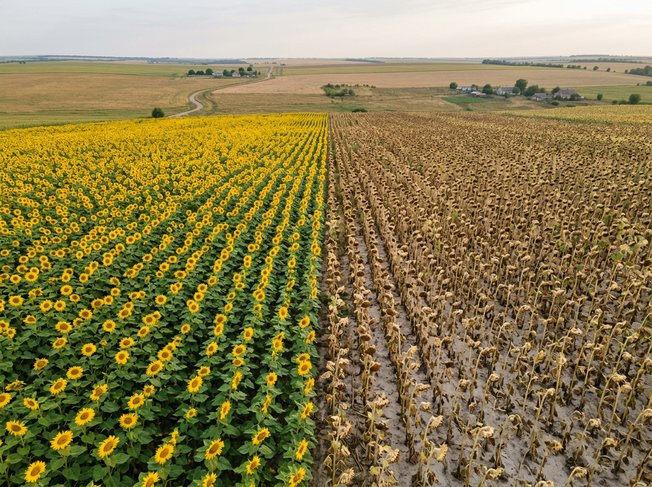
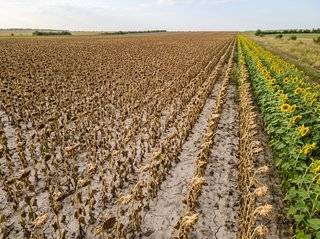
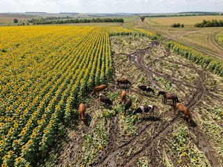

Report ready
Inspection · Hlevakha, field 3 · completed 15:42.
Cover ▸ hero shot (RJ-C4)

Findings ▸ what was found · severity
-
Drought · east half Plants withered across ~6 ha, soil dry and cracked. -
Livestock · north edge Cows and horses got in — ~1.5 ha trampled flat. -
Sunflowers · west half In full bloom — no action needed.
Photo set ▸ evidence frames


Signature ▸ who verified it
OperatorAndriy M.
CertificateUA-DRN-04812
Signed2 Jul, 15:42 · Verified by DRON